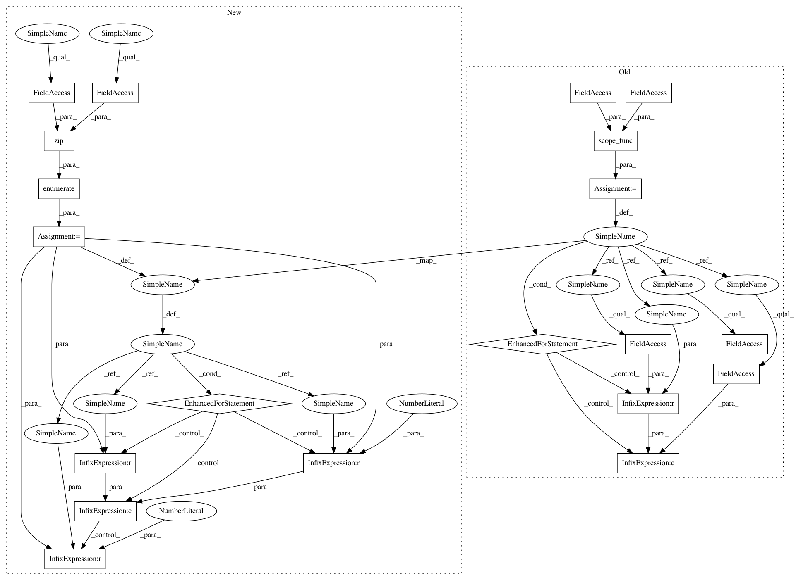

fb50688c503567c5db6207e45e2c5e2ee1ad33df,tgen/features.py,,dai_cooc,#,162
Before Change
ret = defaultdict(float)
for dai in context["da"]:
for node in scope_func(cur_node, incremental=incremental):
if attrib == "right":
if node.parent and node > node.parent:
ret[unicode(dai) + "+True"] = 1
elif node.parent:
ret[unicode(dai) + "+False"] = 1
else:
ret[unicode(dai) + "+" + unicode(node.get_attr(attrib))] = 1
return ret
def prob(cur_node, context):
After Change
ret = defaultdict(float)
for dai in context["da"]:
for idx, (node, parent_idx) in enumerate(zip(tree.nodes, tree.parents)):
if attrib == "right":
if parent_idx >= 0 and idx > parent_idx:
ret[unicode(dai) + "+True"] = 1
elif parent_idx >= 0:
ret[unicode(dai) + "+False"] = 1
else:
ret[unicode(dai) + "+" + unicode(getattr(node, attrib))] = 1
return ret
def bias(tree, context):
In pattern: SUPERPATTERN
Frequency: 3
Non-data size: 20
Instances
Project Name: UFAL-DSG/tgen
Commit Name: fb50688c503567c5db6207e45e2c5e2ee1ad33df
Time: 2014-08-25
Author: odusek@ufal.mff.cuni.cz
File Name: tgen/features.py
Class Name:
Method Name: dai_cooc
Project Name: UFAL-DSG/tgen
Commit Name: fb50688c503567c5db6207e45e2c5e2ee1ad33df
Time: 2014-08-25
Author: odusek@ufal.mff.cuni.cz
File Name: tgen/features.py
Class Name:
Method Name: presence
Project Name: UFAL-DSG/tgen
Commit Name: fb50688c503567c5db6207e45e2c5e2ee1ad33df
Time: 2014-08-25
Author: odusek@ufal.mff.cuni.cz
File Name: tgen/features.py
Class Name:
Method Name: value
Project Name: UFAL-DSG/tgen
Commit Name: fb50688c503567c5db6207e45e2c5e2ee1ad33df
Time: 2014-08-25
Author: odusek@ufal.mff.cuni.cz
File Name: tgen/features.py
Class Name:
Method Name: dai_cooc